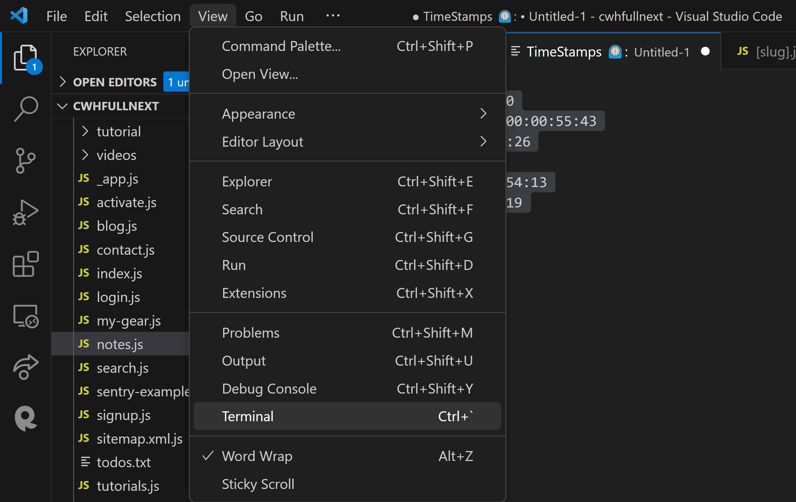
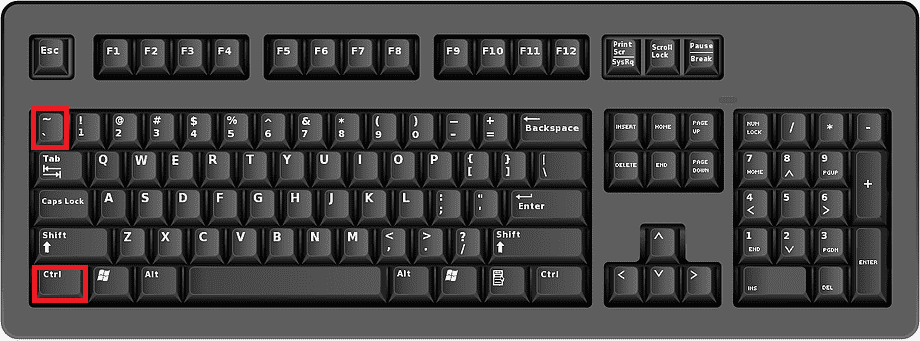
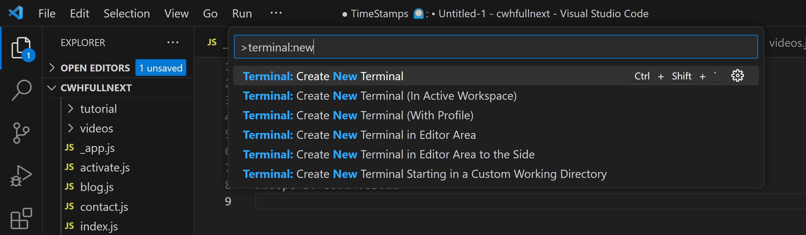
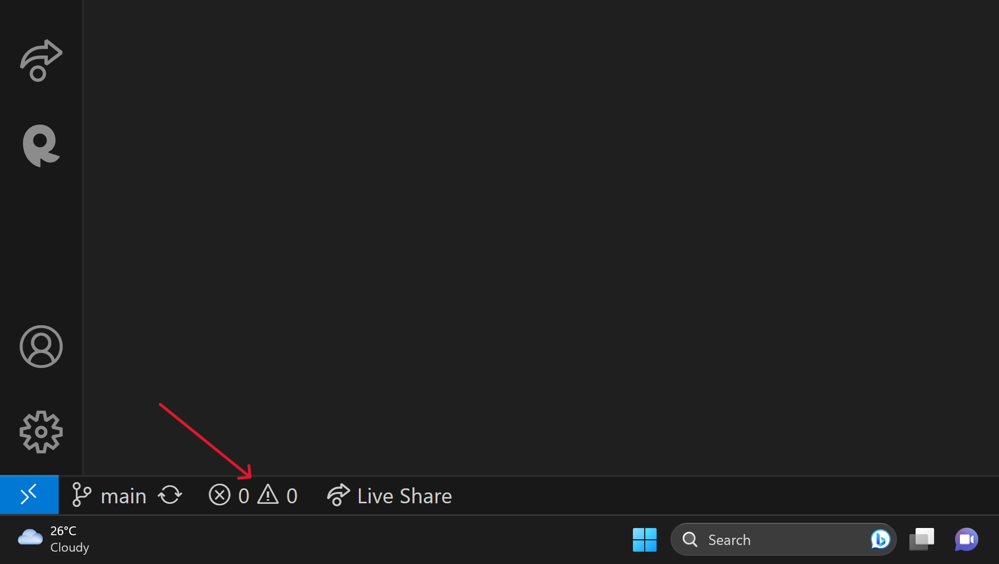

How to Open the Terminal in Visual Studio Code
Visual Studio Code, popularly known as VS Code, is a versatile code editor used by developers all around the world. One of its standout features is the integrated terminal, which allows you to run commands directly within the editor. Here's a step-by-step guide on how to open the terminal in VS Code.
1. Using the Menu Bar
- Click on the "View" option in the menu bar at the top of the window.
- Select "Terminal" from the dropdown list, or press Ctrl + (backtick) on your keyboard.

2. Using Keyboard Shortcuts
On most operating systems, you can open the terminal by pressing Ctrl + (backtick). Here are some specific shortcuts for different operating systems:
- Windows/Linux: Ctrl + (backtick)
- Mac: Cmd + (backtick)

3. Using the Command Palette
- Open the Command Palette by pressing F1 or Ctrl + Shift + P.
- Type "Terminal: New Terminal" and select the corresponding command from the list.

4. Using the Icon in the Sidebar
- Look for the terminal icon on the sidebar. It might be located at the bottom or on the side, depending on your version and settings.
- Click the icon to open the terminal pane.

5. How to Open a Terminal as a Tab in VS Code?
VS Code provides a convenient way to work with multiple terminal instances by allowing you to drag and drop your terminal towards the opened files. This action will open the terminal as a tab within the editor's interface.
To make use of this feature, simply:
- Open a terminal within VS Code using any of the methods mentioned earlier.
- Click and drag the terminal towards the section where your opened files are displayed.
- Release the mouse, and the terminal will appear as a tab alongside your files.
You can repeat these steps to open as many terminal tabs as you like, offering you a more organized and efficient workspace, especially when working on complex projects requiring multiple terminals.
Conclusion
The integrated terminal in VS Code is a powerful tool that streamlines the development process. It's easily accessible through various methods, allowing you to execute commands without leaving your coding environment. Spend some time exploring the terminal's features and customizations, and it may quickly become an essential part of your workflow.